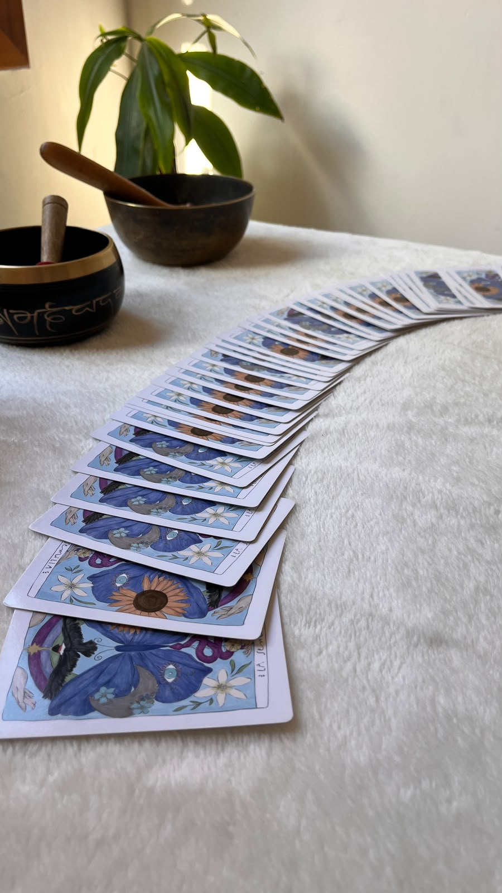

Bienestar y presencia
Reiki
Un momento para relajarte, conectar con el presente y transitar una práctica de bienestar a tu propio ritmo.
- Duración
- A consultar
- Modalidad
- A consultar
- Valor
- A consultar

Un espacio a tu medida
Conocé las propuestas de Vive Reiki. Duración, modalidad, disponibilidad y valor se conversan antes de coordinar.

Bienestar y presencia
Un momento para relajarte, conectar con el presente y transitar una práctica de bienestar a tu propio ritmo.

Escucha e introspección
Un espacio para explorar preguntas e intenciones personales desde la escucha y la reflexión.
.jpg)
Una mirada simbólica
Una herramienta simbólica para mirar una situación, reconocer preguntas y abrir nuevas perspectivas.

Una invitación a conectar
Mensajes e imágenes simbólicas para hacer una pausa y conectar con tu propia intuición.
No hay valores, tiempos ni modalidades asumidos: consultá para recibir la información actualizada de cada servicio.
Una práctica complementaria
El Reiki es una práctica de bienestar y no reemplaza tratamientos, diagnósticos ni atención médica o psicológica. No se garantizan resultados; cada persona vive el encuentro de manera diferente.
Podés preguntar por la propuesta, su duración, valor y modalidad antes de coordinar.
No necesitás decidir de antemano ni contar con experiencia previa para consultar.
El primer paso es conversar
Escribime para consultar disponibilidad y recibir la información antes de reservar.
Consultar una sesión